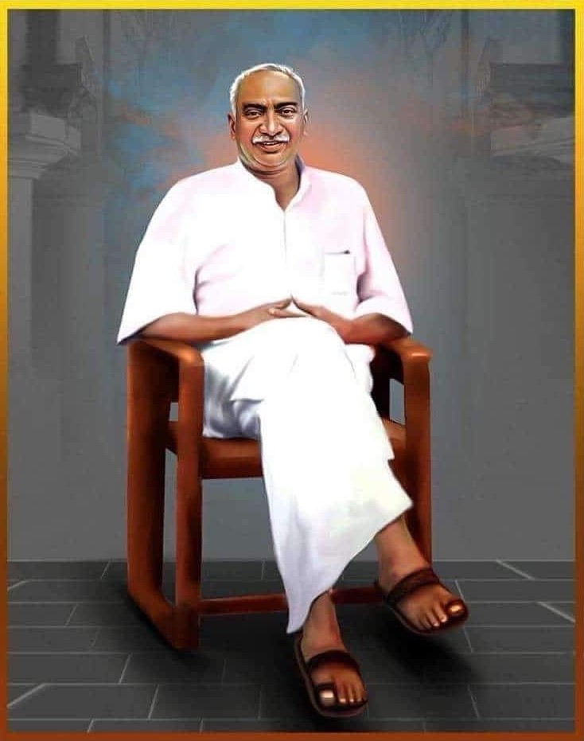

Intoduction

Kumaraswami Kamaraj (15 July 1903 – 2 October 1975), popularly known as Kamarajar was an Indian independence activist and politician who served as the Chief Minister of Madras State (Tamil Nadu) from 13 April 1954 to 2 October 1963. He was the founder and the president of the Indian National Congress (Organisation) , widely acknowledged as the "Kingmaker" in Indian politics during the 1960s.
He also served as the president of the Indian National Congress for two terms i.e. four years between 1964–1967 and was responsible for the elevation of "Lal Bahadur Shastri" to the position of Prime Minister of India after Jawaharlal Nehru's death and Indira Gandhi after Shastri's death. He was the Member of Parliament,Lok Sabha during 1952–1954 and 1969–1975. He was known for his simplicity and integrity. He played a major role in developing the infrastructure of the Madras state and worked to improve the quality of life of the needy and the disadvantaged.
As the president of the INC, he was instrumental in steering the party after the death of Jawaharlal Nehru. As the chief minister of Madras, he was responsible for bringing free education to the disadvantaged and introduced the Free Midday Meal Scheme while he himself did not complete schooling. He was awarded with India's highest civilian honour, the Bharat Ratna, posthumously in 1976. US Vice-president Hubert Humphrey, referred to Kamaraj as "one of the greatest political leaders in all the countries of the free world" in January 1966.

Kamarajar laid the foundation for agricultural and industrial development in Tamil Nadu. Vaigai dam, Manimuthaaru dam, Keezh Bavani dam, Parambikulam dam, Saathanur dam were built during his period. Neyveli Brown Coal Mines, Chennai – Avadi Military Logistics Factory were some of his great moves in pushing Tamil Nadu towards technological progress.
A leader who was the epitome of simplicity, honesty and sacrifice – Karmaveerar Kamarajar! It is said that when he passed away, they found less than Rs 100 in his pocket. But when he stepped down from his Chief Minister post, he left the state treasury with crores and crores of money! Through his selfless service he proved to the people time and again that he is a rare gem whose shine is unparalleled.
He was the role model for the Chief Ministers who succeeded him. In Anna, you can see Kamarajar’s quality of selfless service; in Karunanidhi, you can see Kamarajar’s practical approach; in MGR, you can see Kamarajar’s approach toward the common man; in Jayalalitha, you can see Kamarajar’s fearlessness. In the entirety of the welfare schemes implemented by these 4 leaders, we can see Kamarajar’s impact.